This vignettes describes the full workflow of creating a codebook via
the eatCodebook package. For illustrative purposes we use a
small example data set which comes alongside the package and contains
different types of variables (e.g., numeric, categorical, pooled
variables, scales). We import the data set using the
eatGADS package, which is automatically installed when
eatCodebook is installed.
library(eatCodebook)
file <- system.file("extdata", "example2_clean.sav", package = "eatCodebook")
dat <- eatGADS::import_spss(file)Descriptive Statistics
One of the key elements of a codebook are descriptive statistics
shortly describing each variable in the data set. What kind of
descriptive statistics is reported for each variable depends on the type
of the variable. The function createInputForDescriptives()
creates a template to provide the information that is needed to
calculate the descriptive statistics for an GADSdat object.
The function has some arguments you can use to get a better result and
less manual editing in the next step.
inputForDescriptives <- createInputForDescriptives(GADSdat = dat)
#> Warning in FUN(data[x, , drop = FALSE], ...): Identification of fake scales
#> cannot be done completely automatically. Please check if the assignment of
#> which items belong to a common scale is correct.
head(inputForDescriptives)
#> varName varLabel format imp
#> FALSE.1 ID <NA> A2 FALSE
#> FALSE.2 IDSCH <NA> F8.0 FALSE
#> FALSE.3 varMetrisch metrische Beispielvariable, Kompetenzwert F8.2 FALSE
#> FALSE.4 varOrdinal ordinale Beispielvariable, Kompetenzstufe F8.0 FALSE
#> FALSE.5 varCat nominale Beispielvariable A1 FALSE
#> FALSE.6 skala1_item1 Likert-Skalenindikator F8.0 FALSE
#> type scale group
#> FALSE.1 variable <NA> ID
#> FALSE.2 variable <NA> IDSCH
#> FALSE.3 variable numeric varMetrisch
#> FALSE.4 variable ordinal varOrdinal
#> FALSE.5 variable <NA> varCat
#> FALSE.6 item ordinal skala1The template should be exported to .xlsx, modified and
reimported to R. Some information may need to be modified
because the function does not label it correctly. For this, it is
necessary to understand the functionality and check the variable
entries.
writeExcel(inputForDescriptives, "file_path/inputForDescriptives.xlsx")Here is a brief overview of the different columns in this object:
- varName: The name of the variable of the GADS-object
- varLabel: The label of the variable of the GADS-object
- format: The format of the variable of the GADS-object
- imp: Indicator if imputed variables are involved
- type: Indicator of whether it is a variable of a scale
- scale: Indicator of how the variable is to be represented
- group: Possibility to group variables
In the varName, varLabel and
format columns are information about the variables of
the dataset. You don’t have to edit anything.
imp can be set to WAHR or FALSCH. If
there are several variables to be displayed on one page, this column
must be set to WAHR for these variables and they must be
assigned to the same group at group.
type can be set to variable or scale.
If it is a scale consisting of several individual variables, the scale
variable is set to scale and the individual items to
variable. All other variables should always get
variable as an entry.
The scale column specifies how the variable is to be
displayed. If it is empty, no descreptives are displayed.
numeric is a variable without labeled categories. For
ordinal, it is a categorical variable that has labeled
values.
Now follow the possibilities of how variables can be represented in the codebook and how the table must be edited for this.
Variables without Descriptives
This can be the case, for example, with ID variables or character
variables. The page would then be displayed as follows:
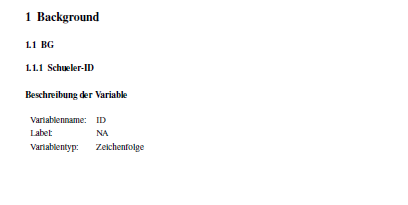
The entry must look like this:
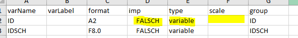
Numeric Variables without labeled Values
This can be used, for example, for variables that represent an age or
variables with values in the decimal range. Nevertheless, these
variables can contain labels for values. If they are defined as missing,
these values are not taken into account in the calculations but are
still reported.
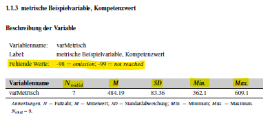
To create an entry for a numeric variable without labeled values,
the Excel must look like this:
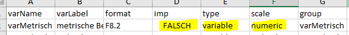
Categorial Variables
This is the page in the codebook, which is well suited for variables
that only have labeled categories:
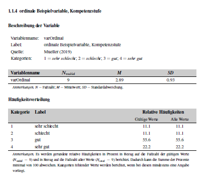
To create it, the Excel should be edited as follows:
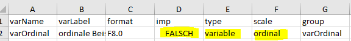
Scale Variables with individual items
It is possible to get the following entries in the codebook for a
scale and the items it is made of:
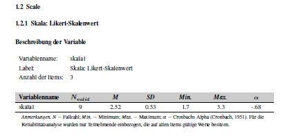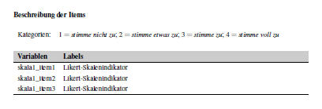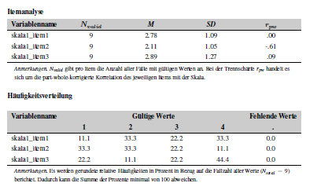
To get these pages the individual items must be labeled as
ordinal and the scale as numeric. They must all have
the same name at group so that they are displayed
together.
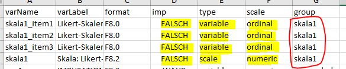
Imputation Variables
For variables where an averaged value is to be determined and
displayed and depending on what was specified in scale,
it results in the following pages in the codebook:
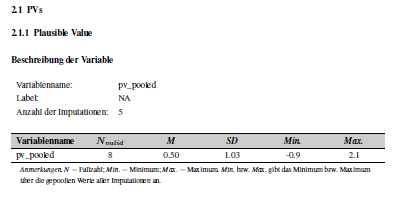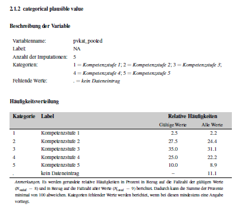
For getting this the imp column becomes relevant.
It must be set to WAHR for these variables. In addition, the
variables also need a common name in group and,
depending on whether they are to be represented categorically or
numerically, the corresponding designation in
scale.
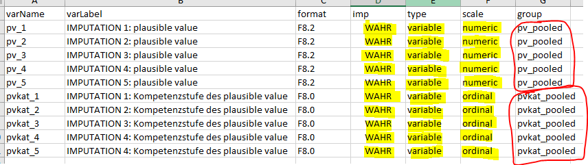
After the table has been adjusted accordingly, it must be read in
again with the function getInputForDescriptives().
inputForDescriptives_edited <- getInputForDescriptives("file_path/inputForDescriptives.xlsx")This input is then used to calculate descriptive statistics via
calculateDescriptives().
# just show function calls
showFunctions <- calculateDescriptives(GADSdat = dat, inputForDescriptives = inputForDescriptives_edited, showCallOnly = TRUE)
showFunctions <- data.frame(varName = names(showFunctions), functionName = as.vector(showFunctions), stringsAsFactors = FALSE)
showFunctions
#> varName functionName
#> 1 pv_pooled kennwerte.gepoolt.metrisch
#> 2 pvkat_pooled kennwerte.gepoolt.ordinal
#> 3 skala_fake_item kennwerte.skala
#> 4 skala1 kennwerte.skala
#> 5 varMetrisch kennwerte.metrisch
#> 6 varOrdinal kennwerte.ordinal
# acutally calculate descriptives
descStatistics <- calculateDescriptives(GADSdat = dat, inputForDescriptives = inputForDescriptives_edited, showCallOnly = FALSE)
#> Warning: `report()` was deprecated in eatRep 0.15.0.
#> ℹ For the original behavior of report() please use eatRep version 0.14.7:
#> 'https://cran.r-project.org/src/contrib/Archive/eatRep/'
#> ℹ The deprecated feature was likely used in the eatCodebook package.
#> Please report the issue to the authors.
#> This warning is displayed once every 8 hours.
#> Call `lifecycle::last_lifecycle_warnings()` to see where this warning was
#> generated.
descStatistics[[5]]
#> N.valid mean.valid sd.valid min.valid max.valid
#> "7" "484.19" "83.36" "362.1" "609.1"
#> sysmis.totalabs
#> "0"If you want to document several data sets in the codebook, you must go through these steps for all data sets and summarise the results in lists. These lists can then be used instead of the individual objects for the following functions.
Value and Missing Labels
Another imported part of a codebook is documentation of the value
labels of valid and missing values. A respective overview is created via
createMissings().
missings <- createMissings(dat, inputForDescriptives = inputForDescriptives_edited)
head(missings)
#> Var.name Wert missing LabelSH Zeilenumbruch_vor_Wert
#> 3 varMetrisch -99 ja not reached nein
#> 4 varMetrisch -98 ja omission nein
#> 5 varOrdinal 1 nein sehr schlecht nein
#> 6 varOrdinal 2 nein schlecht nein
#> 7 varOrdinal 3 nein gut nein
#> 8 varOrdinal 4 nein sehr gut neinIn this case, the resulting object missings has to be
written to xlsx and imported via
getMissings(). Note that alle the getXXX
functions perform important cleaning and preparation steps, therefore
the exporting to xlsx is obligatory.
writeExcel(missings, "example_miss.xlsx", row.names = FALSE)
miss_final <- getMissings("example_miss.xlsx")#> Var.name Wert missing LabelSH Zeilenumbruch_vor_Wert
#> 1 varMetrisch -98 ja omission nein
#> 2 varMetrisch -99 ja not reached nein
#> 3 varOrdinal 1 nein sehr schlecht nein
#> 4 varOrdinal 2 nein schlecht nein
#> 5 varOrdinal 3 nein gut nein
#> 6 varOrdinal 4 nein sehr gut neinVariable Information
With createVarInfo() the most important part of the
codebook is created.
varInfo <- createVarInfo(dat, inputForDescriptives = inputForDescriptives_edited)
head(varInfo)
#> Var.Name in.DS.und.SH Unterteilung.im.Skalenhandbuch Layout
#> 1 ID ja NA -
#> 2 IDSCH ja NA -
#> 3 varMetrisch ja NA -
#> 4 varOrdinal ja NA -
#> 5 varCat ja NA -
#> 6 skala1_item1 ds NA -
#> LabelSH Anmerkung.Var Gliederung
#> 1 <NA> - -
#> 2 <NA> - -
#> 3 metrische Beispielvariable, Kompetenzwert - -
#> 4 ordinale Beispielvariable, Kompetenzstufe - -
#> 5 nominale Beispielvariable - -
#> 6 Likert-Skalenindikator - -
#> Reihenfolge Titel rekodiert QuelleSH
#> 1 NA <NA> nein -
#> 2 NA <NA> nein -
#> 3 NA metrische Beispielvariable, Kompetenzwert nein -
#> 4 NA ordinale Beispielvariable, Kompetenzstufe nein -
#> 5 NA nominale Beispielvariable nein -
#> 6 NA - nein -
#> Instruktionen Hintergrundmodell HGM.Reihenfolge HGM.Variable.erstellt.aus
#> 1 - nein - -
#> 2 - nein - -
#> 3 - nein - -
#> 4 - nein - -
#> 5 - nein - -
#> 6 - nein - -
#> intern.extern Seitenumbruch.im.Inhaltsverzeichnis
#> 1 - nein
#> 2 - nein
#> 3 - nein
#> 4 - nein
#> 5 - nein
#> 6 - neinThis object has to be saved again in an Excel, which has to be adjusted by some manual steps. Here is a brief overview of the different columns in this object:
- Var.Name: The name of the variable
- in.DS.und.SH: Indicator whether the variable is in the codebook and data set
- Unterteilung.im.Skalenhandbuch: Chapter Naming Overview
- Layout: Assignment of the layout options
- LabelSH: The label of the variable
- Anmerkung.Var: Assignment of annotations in the codebook
- Gliederung: Overview of chapter numbering
- Reihenfolge: Order of variables in the codebook
- Titel: Title of the codebook page of the variable
- rekodiert: Display whether a variable was previously recoded
- QuelleSH: Specification of the source of the variable in a questionnaire
- Instruktionen: Specification of the instructions of the variable in a questionnaire
- Hintergrundmodell: Indication of whether the variable is in the background model
- HGM.Reihenfolge: the order for the background model
- HGM.Variable.erstellt.aus: Indication for the background model from which variables the variable was created
- intern.extern: Indication of whether the variable is for internal or external use
- Seitenumbruch.im.Inhaltsverzeichnis: Indication whether there is a pagination in the table of contents for the title
The in.DS.und.SH column indicates whether a variable
only appears in the data set but does not get its own page
(ds), whether it appears both in the codebook and in the data
set (ja), whether it only appears in the scale manual
(sh) or neither (nein). ds is assigned, for
example, for the items of the scale variables, as they do not receive
their own pages. sh for pooled variables, as they are shown in
the codebook but do not exist in the actual data set. nein can
be assigned for variables that are added independently. This can be the
case, for example, if you want to include them in the BGM information,
but the variables do not exist in the data set.
The Layout column is automatically created after
reading in using inferLayout(). In the
Anmerkung.Var column, comments can be inserted (special
text highlighting or breaks must be in the latex logic), which are
displayed as annotations on the respective codebook page.
The Unterteilung.im.Skalenhandbuch column gives the
name for the subchapters. In the Gliederung column, the
chapter numbers must be inserted. Subchapters such as “1.1”, “1.2”,…
“2.1”. The naming of the corresponding upper chapters is done in a later
function. The naming of the subchapters and the corresponding numbers
must always be identical for the variables.
In the Reihenfolge column, the order of the variables
for the codebook can be specified. However, the order of the subchapters
is superordinate to this sorting. If the column is left empty, the order
in the table corresponds to the order in the codebook.
The Titel column specifies the title for the page and
defaults to the variable label.
If a variable has been recoded in the course of previous editing, this
can be marked with a ja in the rekodiert
column and the variable gets a corresponding note in the codebook as
inverted if it is an item of a scale.
In QuelleSH, the short version of a bibliography can be
specified. Based on this, there is a later function that creates the
bibliography and in which one can specify the long version of the
source.
In the Instruktionen column, you can use a latex code
to indicate which instruction was used to collect the variable in a
questionnaire.
With eatCodebook you can also create a page for a
background model (BGM).
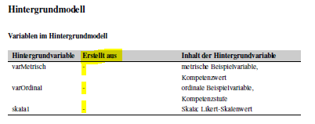
For the variable to appear there, the Hintergrundmodell column must be set to ja. Otherwise, there must be a nein. With HGM.Reihenfolge you can control the order in the codebook. In the HGM.Variable.erstellt.aus column, variables can be specified that make up the variable in question. These are then displayed in the position marked yellow in the image.
writeExcel(varInfo, "example_varInfo.xlsx", row.names = FALSE)
varInfo_final <- getVarInfo("example_varInfo.xlsx")
varInfo_final2 <- inferLayout(varInfo_final, GADSdat = dat, inputForDescriptives = inputForDescriptives_edited)#> Var.Name in.DS.und.SH Unterteilung.im.Skalenhandbuch Layout
#> 1 ID ja BG -
#> 2 IDSCH ja BG -
#> 3 varMetrisch ja BG -
#> 4 varOrdinal ja BG -
#> 5 varCat ja BG -
#> 6 skala1_item1 ds Scale -
#> LabelSH Anmerkung.Var Gliederung
#> 1 <NA> - 1.1
#> 2 <NA> - 1.1
#> 3 metrische Beispielvariable, Kompetenzwert - 1.1
#> 4 ordinale Beispielvariable, Kompetenzstufe - 1.1
#> 5 nominale Beispielvariable - 1.1
#> 6 Likert-Skalenindikator - 1.2
#> Reihenfolge Titel rekodiert
#> 1 0 Schueler-ID nein
#> 2 0 School-ID nein
#> 3 0 metrische Beispielvariable, Kompetenzwert nein
#> 4 0 ordinale Beispielvariable, Kompetenzstufe nein
#> 5 0 nominale Beispielvariable nein
#> 6 0 - ja
#> QuelleSH Instruktionen Hintergrundmodell HGM.Reihenfolge
#> 1 - - nein -
#> 2 - - nein -
#> 3 - - ja -
#> 4 Mueller (2019) - ja -
#> 5 - - nein -
#> 6 - - nein -
#> HGM.Variable.erstellt.aus intern.extern Seitenumbruch.im.Inhaltsverzeichnis
#> 1 - - nein
#> 2 - - nein
#> 3 - - nein
#> 4 - - nein
#> 5 - - nein
#> 6 - - neinStructure
The first foundations for the chapter structure are already laid in
the VarInfo. The function createStructure() is needed to
name the upper chapters.
struc <- createStructure(varInfo_final)
head(struc)
#> Titel Ebene
#> 1.1 <NA> 1
#> 1.2 BG 1.1
#> 1.3 Scale 1.2
#> 2.1 <NA> 2
#> 2.2 PVs 2.1
writeExcel(struc, "example_struc.xlsx", row.names = FALSE)
struc_final <- getStructure("example_struc.xlsx")#> Titel Ebene
#> 1 Background 1
#> 2 BG 1.1
#> 3 Scale 1.2
#> 4 Competences 2
#> 5 PVs 2.1Scale Information
In order to display the scales correctly, it also needs the function
createScaleInfo().
scaleInfo <- createScaleInfo(inputForDescriptives_edited)
head(scaleInfo)
#> varName Anzahl_valider_Werte
#> 1 skala1 -
#> 2 skala_fake_item -
#> 3 pv_pooled -
#> 4 pvkat_pooled -
#> Items_der_Skala
#> 1 skala1_item1,skala1_item2,skala1_item3
#> 2 skala_fake_item1,skala_fake_item2,skala_fake_item3
#> 3
#> 4
#> Imputationen
#> 1
#> 2
#> 3 pv_1,pv_2,pv_3,pv_4,pv_5
#> 4 pvkat_1,pvkat_2,pvkat_3,pvkat_4,pvkat_5
writeExcel(scaleInfo, "example_scaleInfo.xlsx", row.names = FALSE)
scaleInfo_final <- getScaleInfo("example_scaleInfo.xlsx")#> varName Anzahl_valider_Werte Items_der_Skala
#> 1 skala1 - skala1_item1,skala1_item2,skala1_item3
#> 2 pv_pooled -
#> 3 pvkat_pooled -
#> Imputationen
#> 1
#> 2 pv_1,pv_2,pv_3,pv_4,pv_5
#> 3 pvkat_1,pvkat_2,pvkat_3,pvkat_4,pvkat_5Literature Information
The literature information contains the sources which should be cited within the codebook. It builds on the references mentioned in the VarInfo. The latex code must also be used here.
litInfo <- createLitInfo(varInfo_final)
head(litInfo)
#> Kurzangabe Langangabe in_Literaturverzeichnis
#> 1 Mueller (2019) NA NA
writeExcel(litInfo, "example_litInfo.xlsx", row.names = FALSE)
litInfo_final <- getLitInfo("example_litInfo.xlsx")#> Kurzangabe Langangabe in_Literaturverzeichnis
#> 1 Mueller (2019) Mueller, M. (2020). Titel. jaAbbreviation List
An abbreviation list can be added which explains abbreviations or statistical symbols used throughout the codebook. The latex code must also be used here.
abbrList <- createAbbrList()
abbrList
#> $Akronyme
#> [1] Abkuerzung Bedeutung
#> <0 rows> (or 0-length row.names)
#>
#> $`Statistische Formelzeichen`
#> [1] Symbol Bedeutung
#> <0 rows> (or 0-length row.names)
writeExcel(abbrList, "example_abbrList.xlsx", row.names = FALSE)
abbrList_final <- makeAbbrList("example_abbrList.xlsx")Cover Page
A cover page can be added to the codebook. On the one hand, there is this possibility.
cover <- makeCover(logoFile = NULL,
maintitle = "Study of Achievement",
subtitle = "Codebook of Study of Achievement",
authors = "Some Person",
addAuthors = "With the help of some other persons",
schriftenreihe = "Book 9 of Studies of Achievement",
bibinfo = "test")However, this can also be done by reading in a self-designed PDF page. This must simply be assigned to the object.
Meta data
Meta data can be added to the codebook.
meta <- createMetadata()
meta[1, "Title"] <- "Codebook Test"
meta[1, "Author"] <- "Anna Muster"
meta[1, "Keywords"] <- "lsa, education"
meta[1, "Subject"] <- "test"
writeExcel(abbrList, "example_meta.xlsx", row.names = FALSE)
meta_final <- makeMetadata("example_meta.xlsx")Further make steps
Finally, the previously prepared bibliography and background model still need to be finalised. This is done using the following syntax.
Chapters
Create the chapter structure. Furthermore, the name of the top chapter is assigned here. The name of the data set.
chapters <- createChapters(varInfo_final2)
chapters[, 2] <- "Datensatz"Codebook
Now we create the actual codebook script via calling the
codebook() function. Here, latex code can also be inserted
at intro and lastpage, for example to
write introductory texts or to design a last page.
descStatistics2 <- descStatistics
descStatistics2$skala1[[2]] <- as.data.frame(descStatistics2$skala1[[2]])
latex_skript <- codebook(varInfo = varInfo_final2, missings = miss_final, struc = struc_final,
scaleInfo = scaleInfo_final,
dat = eatGADS::extractData(dat), Kennwertedatensatz = descStatistics2,
chapters = chapters, deckblatt = cover, intro = "", literatur = lit,
abkuerzverz = abbrList_final, hintmod = hint, lastpage = "")
#>
#> Erstelle Layout-Skripte fuer: dat
#> Layout der Variable: ID
#> Layout der Variable: IDSCH
#> Layout der Variable: varMetrisch
#> Layout der Variable: varOrdinal
#> Layout der Variable: varCat
#> Layout der Variable: skala1
#> Layout der Variable: pv_pooled
#> Layout der Variable: pvkat_pooled